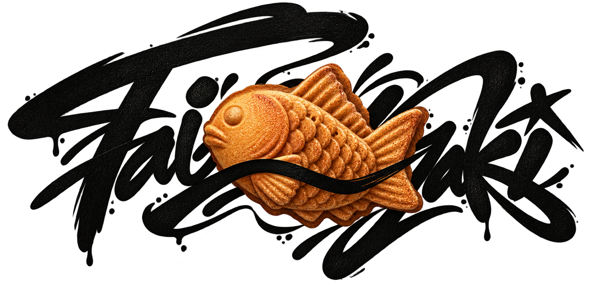

Phase-scoped tools
Each phase exposes only the tools permitted in that state. Invalid calls are rejected at the server boundary.

Plans persist outside the model. State transitions are enforced by the server. Completion is recorded only after executable verification.
The problem
Long-running agents lose plans, silently omit subtasks, and declare success too early. Taiyaki treats the agent as an untrusted client of its own plan: the plan lives outside the context window, and state transitions live outside the agent's discretion.
How it works
Each phase exposes only the tools permitted in that state. Invalid calls are rejected at the server boundary.
Verification runs server-side. PASS receipts are tied to the current tree hash, so completion cannot be fabricated.
Transitions carry actor, timestamp, and receipt references. “Done” becomes an environmental fact, not a model opinion.
Core invariants
The agent cannot advance without producing proof, and the proof is produced by execution the agent does not control.
github.com/FabioFlorey/taiyaki ↗